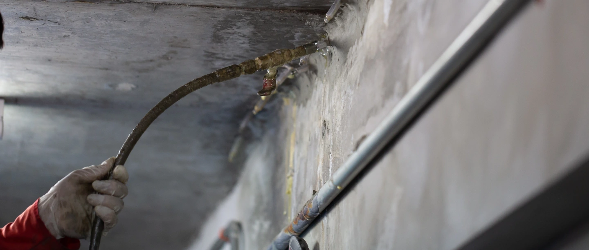
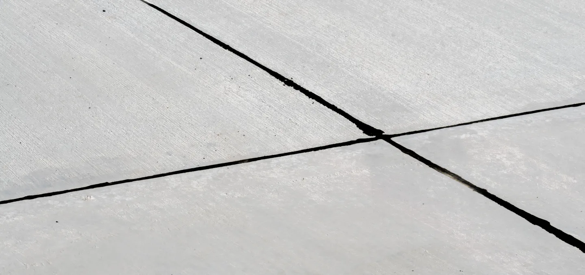
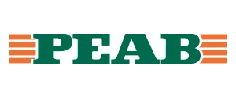
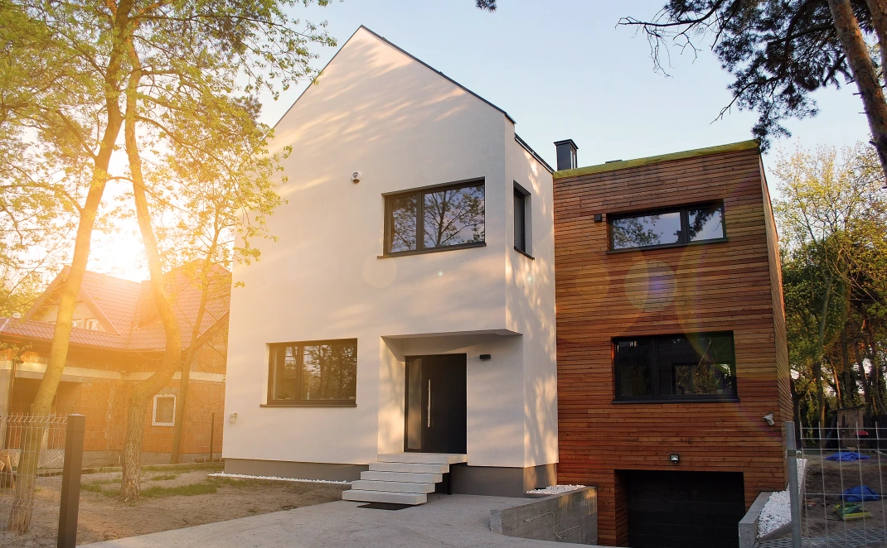

Injektering av betong
Vatten som tränger in eller sprickor som behöver åtgärdas? Vi tätar och förstärker betong med en metod anpassad efter konstruktionen.
Läs om injektering av betongSprickor & läckageHela Sverige

Från minsta spricka till hela bygget. TiB Entreprenad förenar tätning, injektering och bygg – med omsorg om varje detalj.
Erfarenhet från samarbeten med stora samhällsbyggare.

En fastighet ska fungera i vardagen och hålla över tid. Vi tar hand om det som behöver tätas, förstärkas och byggas – för företag, fastighetsägare och privatpersoner.
Lär känna TiB Entreprenad
Vatten som tränger in eller sprickor som behöver åtgärdas? Vi tätar och förstärker betong med en metod anpassad efter konstruktionen.
Läs om injektering av betongByggnader rör sig. Fogarna behöver följa med. Vi renoverar rörelsefogar för jämnare ytor och golv som klarar vardagens belastning.
Läs om dilatationsfogar
Ett nytt kök, mer plats eller ett helt nytt hus. Våra snickare hjälper dig från första tanke till ett genomarbetat resultat.
Läs om snickeri & byggEn liten öppning kan släppa in mycket vatten. Med injektering når vi in i sprickan och behandlar problemet där det finns, ofta utan omfattande rivning.
Vi bedömer förutsättningarna på plats och väljer material efter konstruktionens behov.
Så fungerar polyuretaninjekteringSprickan och konstruktionens förutsättningar undersöks. Material och metod väljs efter skadan och eventuell vatteninträngning.

Det börjar kanske med en skiss vid köksbordet. Vi hjälper dig vidare med planering, materialval och ett utförande där delarna bildar en helhet.
Läs om totalentreprenadDu ska veta vad som behöver göras, vad det kostar och hur vi tar arbetet vidare.
Beskriv ditt behov. Vid ett kostnadsfritt platsbesök går vi igenom förutsättningarna och vad du vill uppnå.
Vi tar fram en offert med omfattning och tidsram. Material och utförande anpassas till ditt projekt.
Arbetet utförs med löpande dialog. Vi går igenom resultatet och avslutar det vi har kommit överens om.
Våra rötter går tillbaka till 1990. I dag leds TiB av Tobias Thorén, med över 20 års erfarenhet som snickare och en tydlig vilja att utveckla företaget vidare.
Människorna och historien bakom TiBriktigt bra och hjälpsam firma. Vi är mer än nöjda!
Dela gärna din upplevelse. Du kan också lämna ett omdöme på Google.
Här är svaren på några vanliga frågor. Ditt projekt får gärna bli nästa samtal.
Ring oss på 070 557 37 75Vi arbetar med injektering av betong, dilatationsfogar, snickeri och bygg. Våra kunder är bland annat fastighetsägare, byggföretag, kommuner och privatpersoner.
Ja. Vi utför injektering och fogarbeten i hela Sverige. Snickeri och bygg utför vi i Västerås med omnejd.
Vi erbjuder kostnadsfritt platsbesök och offert. Kontakta oss och berätta om fastigheten, skadan eller byggprojektet så planerar vi nästa steg.
Ja, vi erbjuder totalentreprenad och samordnar projektet från planering till färdigställande. Vilka delar som ingår går vi igenom i offert och tidsplan.
Vi börjar med ett kostnadsfritt platsbesök och en offert.